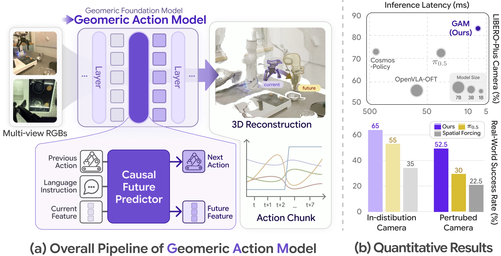
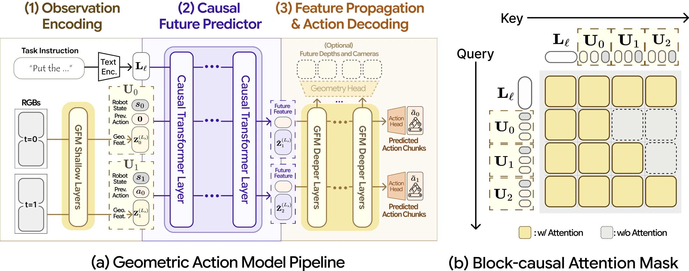
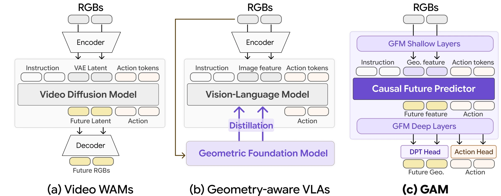
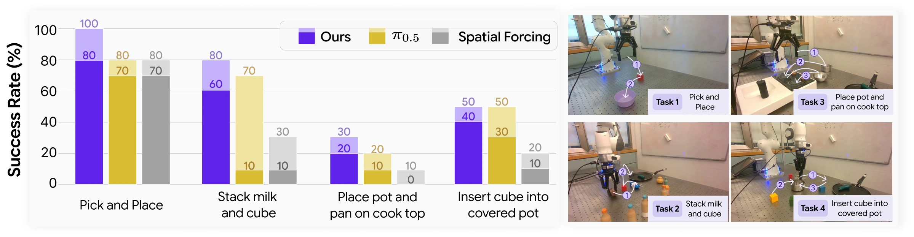
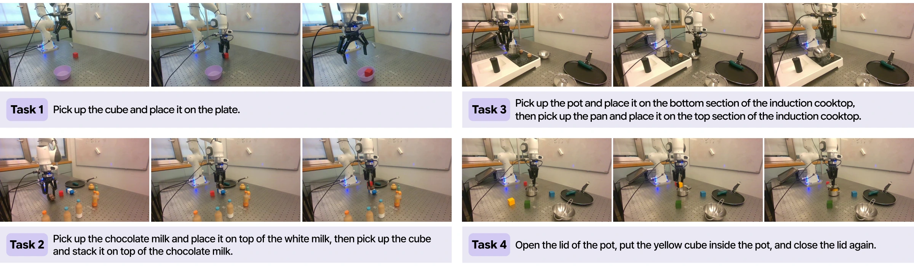
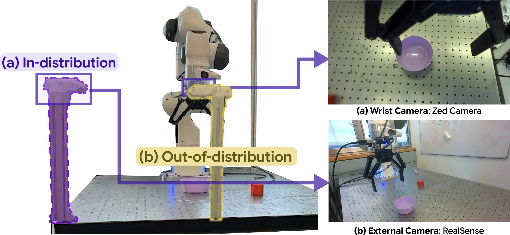

A language-conditioned manipulation policy that repurposes a pretrained geometric foundation model as one shared backbone for perception, future prediction, and action — more accurate, more robust, faster, and lighter than foundation-model-scale baselines.
1KAIST AI · 2ETH Zurich · 3ETH AI Center

Real-robot comparison of GAM against π0.5 and Spatial Forcing across four manipulation tasks, in nominal (ID) and camera-perturbed out-of-distribution (OOD) settings.
Generalist robot policies must follow user instructions while reasoning about how objects, cameras, and robot actions interact in the 3D physical world. Recent vision-language-action models and video world-action models inherit strong semantic or temporal priors from large-scale foundation models, but they still operate primarily on 2D image frames or 2D-derived latent spaces, leaving the geometry required for contact-rich manipulation implicit.
We propose Geometric Action Model (GAM), a language-conditioned manipulation policy that directly repurposes a pretrained Geometric Foundation Model (GFM) as a shared substrate for perception, temporal prediction, and action decoding. GAM splits the GFM at an intermediate layer: the shallow layers serve as an observation encoder, while a causal future predictor inserted at the split layer forecasts future latent tokens conditioned on language, proprioception, and action history. The predicted future tokens are then routed through the remaining GFM blocks, allowing a single backbone to produce both future geometry and actions. On a broad suite of simulation and real-robot benchmarks, GAM is more accurate, more robust, faster, and lighter than current foundation-model-scale baselines.
GAM cuts a pretrained GFM at an intermediate layer and inserts a causal transformer in between — turning a static 3D perception model into a language-conditioned world-action model with minimal architectural change, while preserving its rich geometric priors.

The GFM's shallow layers are reused as the observation encoder, mapping multi-view RGB frames into spatially meaningful latent geometric states — no task-specific encoder trained from scratch.
A causal transformer inserted at the split layer forecasts the next latent geometric state, conditioned on the task instruction, proprioception, and action history — next-token prediction, but for 3D world states.
Predicted future tokens flow through the remaining GFM blocks: the original depth head decodes future geometry while a lightweight action head regresses the executable action chunk — one forward pass, both outputs.

On LIBERO, GAM matches saturated state-of-the-art success rates. On LIBERO-Plus — which perturbs cameras, lighting, backgrounds, and layouts — it takes the overall lead, with the smallest degradation of any method and a +9.7%p margin in the camera-perturbation split.
| Method | Size | LIBERO ↑ | LIBERO-Plus ↑ | Camera ↑ |
|---|---|---|---|---|
| π0.5 | 3.3B | 96.9 | 84.6 (↓12.3) | 72.0 |
| OpenVLA-OFT | 7B | 97.1 | 69.6 (↓27.5) | 56.4 |
| π0 | 3.3B | 91.3 | 69.3 (↓22.0) | 61.0 |
| Cosmos-Policy | 2B | 98.5 | 82.4 (↓16.1) | 73.4 |
| Fast-WAM | 6B | 97.6 | 50.0 (↓47.5) | 16.4 |
| π0.5 + Spatial Forcing | 3.3B | 94.0 | 25.7 (↓58.3) | 0.1 |
| π0.5 + ROCKET | 3.3B | 95.3 | 47.5 (↓46.6) | 30.9 |
| GAM (Ours) | 1.4B | 97.6 | 85.5 (↓12.1) | 83.1 |
Success rates (%) on LIBERO and LIBERO-Plus. "Camera" is the camera-perturbation split of LIBERO-Plus. Full tables in the paper.
One feed-forward pass with KV-cached history — up to 55× faster than diffusion-based policies.
Four contact-rich manipulation tasks, trained from ~200 teleoperated demonstrations each. Half of all evaluation trials shift the external camera by 85 cm and 45° — an out-of-distribution setting where 2D-based policies collapse and GAM keeps working.



Because future prediction lives in the GFM's latent space, GAM's forecasts decode into dense future depth maps that closely track ground truth — swipe through rollouts from each LIBERO suite.
Uncut open-loop rollouts of GAM on LIBERO Original and LIBERO-Plus. Each clip shows the external camera (left) and the wrist camera (right). Pick a task suite and swipe through.
GAM builds on DA3-Giant and is pretrained on a mixture of Open-X Embodiment (72%), MimicGen (18%), and RoboCasa365 (10%) single-arm robot data, then fine-tuned on each benchmark — with future-depth supervision from simulators or teacher pseudo-depth.